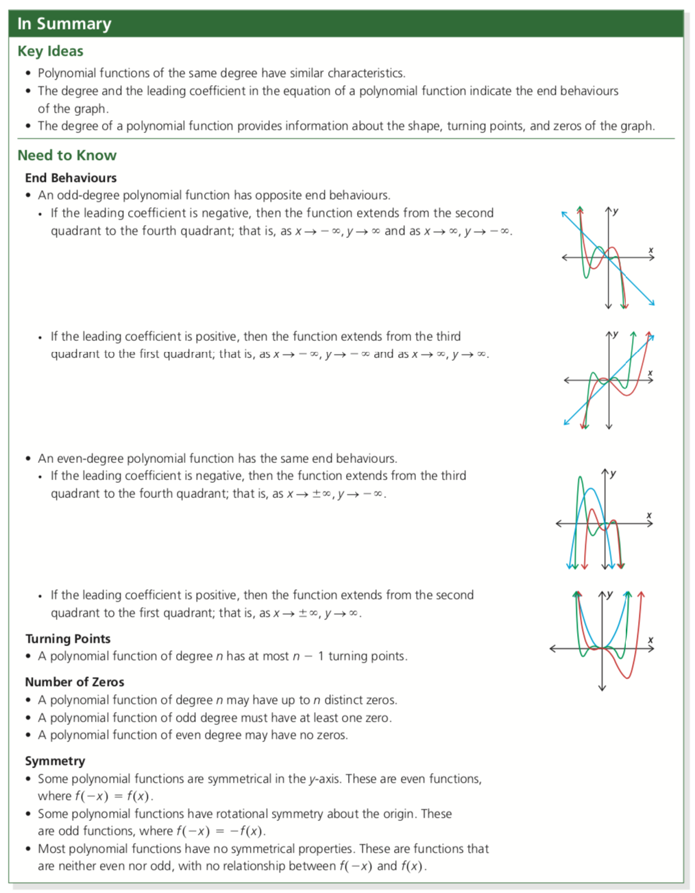

Exploring Polynomial Functions and Characteristics of Polynomial Functions
Exploring Polynomial Functions
Beth knows that linear functions result in graphs of straight lines, while quadratic functions result in parabolas. She wonders what happens when the degree of a function is larger than 2. Beth searched for polynomials on the Internet and found the following table.

Characteristics of Polynomials
Although the graphs of polynomials can appear very different, they also have many common and predictable properties.
(1) Even/Odd Polynomials
The order or degree is the highest exponent, and this value (even or odd) determines some behaviors.
(2) Leading Coefficient
The sign of the coefficient of the highest order term will determine if the polynomial is reflected, affecting the overall appearance of the graph:
How the graph starts/ends end behavior direction of opening (for even polynomials)


Characteristics of Polynomials
This function has an odd degree. Its lead coefficient is positive.

A turning point occurs whenever the graph changes from increasing to decreasing or decreasing to increasing.

Absolute maximum or minimum values are the greatest or least values for the entire polynomial (i.e., the entire domain).
Even polynomials will always have an absolute extrema.
Odd polynomials will never have an absolute extrema.
Local extrema occur at any other turning points which are not absolute extrema.

Zeroes occur where the graph crosses the x-axis.
Even polynomials may have no zeroes, or more.
Odd polynomials must have at least one zero.

